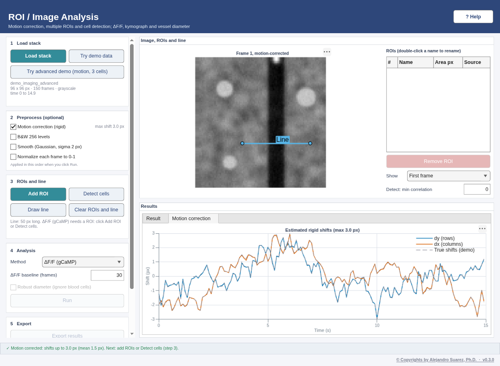
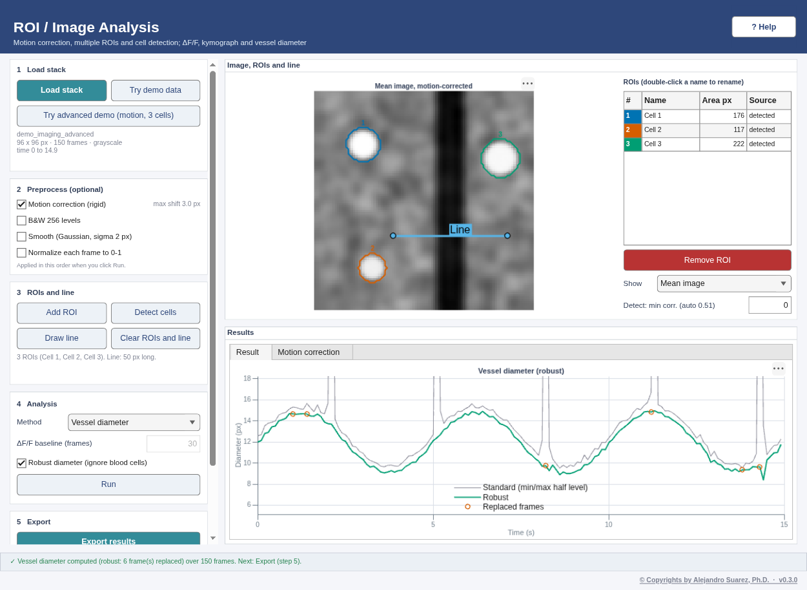

Quality
What the automated tests check
The test suite (tests/, run with run_tests) analyses synthetic data with known answers, analytic signals and published textbook examples, and compares the results with stated tolerances. Continuous integration runs it in real MATLAB, with a virtual display, on every push.
Scope and limits
- The simulated recordings are made by the toolbox's own generators (demo data). Passing these tests shows that the analyses recover what was simulated; it is not a validation on real recordings or on independent ground-truth datasets.
- Tolerances are those written in the test files. Tests that need a toolbox or a display that is not available are skipped, not passed.
- The numbers below are the checks as they are in the repository; the test files are the reference.
Demo ground truth recovered
| Quantity | Simulated / exact | Checked within | Test |
|---|---|---|---|
| LDF: response peak delay (trial average) | 4 s | ± 0.5 s | DemoDataTest, LDFPipelineTest |
| LDF: response amplitude | 30 PU | ± 25% (DemoDataTest); ± 5 PU (LDFPipelineTest) | DemoDataTest, LDFPipelineTest |
| LDF: onsets and trials | 9 onsets, 8 complete trials | onsets ± 1 sample; exact count | LDFPipelineTest |
| LDF processing vs the previous in-app code | same trials | 1e-12 | LDFPipelineTest |
| ERP: N1 latency on the sink channel | 15 ms | ± 3 ms | DemoDataTest, LFPFeaturesTest |
| ERP: channel with the deepest N1; CSD sink channel | channel 4 | exact | DemoDataTest, LFPFeaturesTest |
| ERP: stimulus onsets | 15 onsets | ± 1 sample | LFPFeaturesTest |
| ERSP: 40 Hz burst, 100–200 ms (oscillation demo) | phase-locked burst | > 6 dB; ITPC > 0.8; < 3 dB on channel 8 | LFPFeaturesTest |
| Band power: theta on channel 8 | A² = (40 µV)² | ± 20%, not modulated by the stimuli | LFPFeaturesTest |
| MUA: threshold crossings on channel 4 | simulated spike count | 0.6× to 1.5× | DemoDataTest |
| MUA: units after sorting + auto-merge (channel 4) | 2 home units (+1 from channel 5) | 2 to 3 units | MUAFeaturesTest |
| Imaging: time of the last calcium peak | 11 s | ± 0.6 s | DemoDataTest |
| Imaging: mean vessel diameter | 12 px | ± 3 px | DemoDataTest |
| Imaging: red blood cell speed from the kymograph | 2 px/frame | ± 0.3 | DemoDataTest |
| Motion correction: per-frame shift error | random walk, max 3 px | < 0.3 px (mean reference), < 0.4 px (first frame) | ImagingFeaturesTest |
| Detect cells | 3 cells | exactly 3, centres within 3 px | ImagingFeaturesTest |
| ΔF/F per detected cell | event times per cell | peaks ± 0.5 s; < 0.1 at other cells' events | ImagingFeaturesTest |
| Robust vessel diameter with a crossing blood cell | 12 ± 3 px sine | max error < 2.5 px, RMS < 1 px (standard: jumps > 10 px) | ImagingFeaturesTest |
| Group demo: paired t-test, Control vs Stimulated | +12 PU (population) | p < 0.05, CI above 0, dz within 30% of the sample value | StatsFeaturesTest |
| Batch LDF: latency / amplitude per file | 3–4.5 s / 20–35 PU | ± 0.4 s / ± 3 PU | BatchFeaturesTest |
| Batch LFP: N1 latency / amplitude / sink channel | 12–18 ms / −100 to −140 µV / 3–5 | ± 1.5 ms / ± 20% / exact | BatchFeaturesTest |
| Batch imaging: peak ΔF/F / time / mean diameter | 0.5–1.5 / known / 10–14 px | ± 0.1 / ± 0.15 s / ± 0.75 px | BatchFeaturesTest |
| Batch features: latency / amplitude | 3–4.5 s / realised mean | ± 0.35 s / ± 1.5 PU | BatchFeaturesTest |
| Batch MUA: same recording at 2× gain | identical spikes | spike count ± 5%; 2–3 units; evoked rate > 3× baseline | BatchFeaturesTest |
CSD methods (core/demo/demoCSD.m): depth of the sink | sink at contact 8 of 16 (4 of 8) at 15 ms; discs 500 µm wide | within one contact for Standard, iCSD delta / step / spline and kCSD; the inverse methods have a lower error than Standard; Standard is bit-identical to the previous CSD | CSDFeaturesTest, CSDWalkthroughTest |
Analytic checks
| Function | Known answer | Test |
|---|---|---|
| Peak latency, amplitude, onset delay (50%), FWHM, rise (10–90%), decay (to 50%), AUC | closed-form values of a Gaussian response on a raised baseline, also mirrored (negative); NaN on empty or flat windows | SignalFeaturesTest |
| ROI intensity, ΔF/F, movement, kymograph speed (three methods), vessel diameter | small synthetic stacks with exact answers | ImagingTest |
| Sub-pixel vessel diameter | soft-walled synthetic profiles: error < 0.5 px, better than sample counting | ImagingFeaturesTest |
| Hampel filter | flags exactly the injected spikes | ImagingFeaturesTest |
| Morlet wavelets | peak at a 25 Hz sinusoid (± 1 Hz), correct phase, flat power for white noise (± 15%) | LFPFeaturesTest |
| Welch spectrum | peak at 50 Hz; total power = variance (± 2%); white-noise floor 2σ²/fs | LFPFeaturesTest |
| Spectrogram | tracks a 10 → 30 Hz change (± 2 Hz) | LFPFeaturesTest |
| Band power | |analytic signal|² = A² (± 1%), nothing outside the band | LFPFeaturesTest |
| CSD | V(z) = z² gives CSD = −2 everywhere | LFPFeaturesTest |
| Epoch averaging | edge epochs excluded, not zero-filled | LFPFeaturesTest |
| Auto-merge | merges two copies of one unit (r > 0.95); keeps units that differ in size or shape | MUAFeaturesTest |
| Split | separates two mixed units (> 97% correct); merge undoes the split | MUAFeaturesTest |
| PSTH | recovers a 10 → 100 spikes/s step (± 15%) | MUAFeaturesTest |
| Correlograms | empty within the 2 ms dead time; cross-correlogram peak at a known 5.5 ms lag | MUAFeaturesTest |
Statistics
GroupStats is written in base MATLAB and checked against published textbook results that statistics packages reproduce:
- Student's (1908) sleep data (R dataset
sleep): paired t = −4.0621, df = 9, p = 0.002833; Welch t = −1.8608, df = 17.776, p = 0.07939, with their 95% confidence intervals; Wilcoxon signed-rank with ties and a zero difference. - Examples from Hollander & Wolfe (as in R's
wilcox.testhelp): exact signed-rank and exact Mann–Whitney p-values, the latter also by full enumeration. - R's
PlantGrowth: one-way ANOVA, Tukey HSD and Kruskal–Wallis. - Identities: t quantiles, F = t² for two groups, the studentized range for two groups = √2·|t|, symmetry, zero effect.
- Repeated measures: the repeated-measures ANOVA sums of squares, F, p, partial and generalized η² against a small data set worked by hand; Mauchly's W and the Greenhouse–Geisser / Huynh–Feldt ε against their written-out formulas; a data set that violates sphericity reports the Greenhouse–Geisser corrected p; with two conditions F = paired t²; the Friedman χ² (with its tie correction) and Kendall's W against the textbook formula, and the sign test for two conditions.
- Figure export writes non-empty PDF, SVG, EPS and PNG files without changing the source axes.
File formats and sessions
- Readers: the demo recording written as Intan, Open Ephys and NWB is read back within half a quantisation step, with the right rate, channel count and stimulus onsets. Because a round trip only shows that a reader agrees with the toolbox's own writer, every format also has a file assembled byte by byte from the published format description, and checks of clear errors (wrong magic number, missing files, truncated data).
- Sessions: MD5 checksums match values computed independently (Python
hashlib/md5sum) with the Java and the pure-MATLAB implementation; saving and loading round-trip; inputs are classified as ok, changed, missing or moved; for each of the 7 analysis windows a saved session reopened in a new window gives the same results, and a session opened in the wrong window is refused. - Batch: a corrupt or wrong file becomes an error row while the other files run; the CSV, MAT and log are written; Cancel skips the remaining files; MUA sorting is repeatable with its seed and leaves the global random stream unchanged.
Every window, driven step by step
AppSmokeTest opens every window and dialog. The walkthrough tests (DemoWalkthroughTest and the per-area walkthroughs) drive each window through its steps on the demo data through the same public methods the buttons call, save a screenshot after every step (the frames on this site), and fail if a step errors or, for several steps, if the result misses the simulated values.
Examples: simulated vs measured in the screenshots
| Where | Simulated | Shown in the window |
|---|---|---|
| Batch, LDF: peak latency per file | 3, 3.5, 4, 4.5 s | 3.06, 3.65, 3.90, 4.47 s |
| Batch, imaging: peak ΔF/F per file | 0.5, 1.0, 1.5 | 0.504, 1.006, 1.521 |
| Batch, response features: peak latency (mean trace) | 3, 3.5, 4, 4.5 s | 3.1, 3.6, 4.1, 4.4 s |
| MUA: units on channel 4 after auto-merge | 2 units on channel 4, 1 on channel 5 | 3 units (356, 177, 62 spikes); merge r = 0.98 |
| Motion correction: largest shift | 3 px | 3.0 px |
| Groups: Stimulated − Control | 12 PU (population) | 11.9 PU [95% CI 9.1, 14.7], p < 0.0001 |
{kind=link}

DEMO DATA — synthetic, generated by core/demo/demoImagingAdvanced.m{kind=link}

DEMO DATA — synthetic, generated by core/demo/demoImagingAdvanced.m